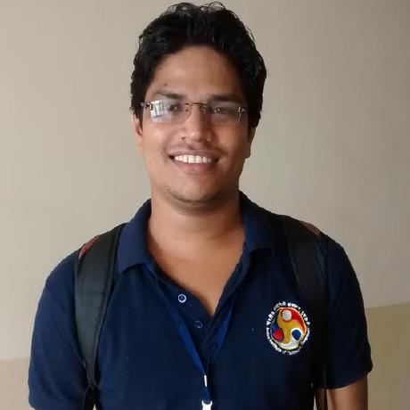

About Me
-
Currently, I am a Research Associate at Inception Institute of Artificial Intelligence (IIAI), Abu Dhabi, UAE.
Prior to joining IIAI, I was a Postdoctoral Researcher at National Centre of Text Mining (NaCTeM), The University of Manchester, UK working with Prof. Sophia Ananiadou.
And before that, I was a Ph.D. candidate in the Department of Computer Science and Engineering, IIT Guwahati, India, working with Dr. Ashish Anand.
Research Interests
- Information Extraction
- Knowledge Base Question Answering
- Machine Translation
News & Activities
- July 16, 2020: Paper titled "Relation Extraction with Self-determined Graph Convolutional Networks" accepted for the publication in CIKM-2020
- April 23, 2020: Paper titled "Attending to Inter-sentential Features in Neural Text Classification" accepted for the publication in SigIR-2020
- April 5, 2020: Paper titled "Autoencoding Keyword Correlation Graph for Document Clustering" accepted for the publication in ACL-2020
- May 16, 2019: Journal titled "Adverse Drug Events and Medication Relation Extraction in EHRs with Ensemble Deep Learning Methods" accepted for the publication in Journal of the American Medical Informatics Association (JAMIA)
- April 16, 2019: Paper titled "Inter-sentence Relation Extraction with Document-level Graph Convolutional Neural Network" accepted for the publication in ACL-2019
- March 23, 2019: Joined Inception Institute of Artificial Intelligence (IIAI) as a Research Associate in Abu Dhabi, UAE
- Nov 03, 2018: Our team achieved 6th rank in concept extraction and 3rd rank in both relation extraction and end-to-end system in n2c2 shared task 2018 track 2
- Aug 06, 2018: Journal titled "Drug-Drug Interaction Extraction from Biomedical Text Using Long Short Term Memory Network" accepted for the publication in Journal of Biomedical Informatics.
- June 11, 2018: Successfully defended my thesis and earned the Ph.D. degree
- Mar 29, 2018: Journal titled "What matters in a transferable neural network model for relation classification in the biomedical domain?" accepted for the publication in Artificial Intelligence in Medicine.
- Oct 7, 2017: Joined NaCTeM Lab as a Research Associate in Manchester, UK.
- Sep 28, 2017: Gave talks on five days short-term course on Deep Learning Techniques and its Application at NIT Raipur, India
- Sep 5, 2017: Submitted my PhD thesis for evaluation in IIT Guwahati, India.
- Jul 17, 2017: Presented my synopsis seminar on proposed PhD thesis titled "Neural architectures for Named entity recognition and relation extraction in biomedical and clinical text".
- May 30, 2017: Paper titled "Learning local and global contexts using a convolutional recurrent network model for relation classication in biomedical text" accepted for the publication in CoNLL-2017.
- May 23, 2017: Paper titeled "Biomedical Event Trigger Identification Using Recurrent Neural Network" accepted for the publication in BioNLP-2017.
- July 6, 2016: Started an internship at Xerox Research Center of India for three months.
- Feb 2, 2016: Started an internship at GVK Bioscience for three months.
- Aug 7, 2016: Paper titled "Relation extraction from clinical texts using domain invariant convolutional neural network" accepted for publication in BioNLP-2016.
- July 25, 2016: Paper titled "Recurrent neural network models for disease name recognition using domain invariant features" accepted for publication in ACL-2016.
- Aug 7, 2015: Paper titled "Evaluating distributed word representations for capturing semantics of biomedical concepts" accepted for publication in BioNLP-2015.
